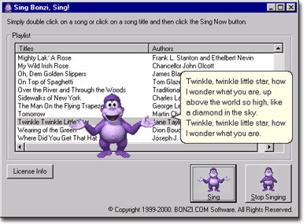

|
BonziBUDDY™
Songs Module Help Page |
Have a technical
question? Click
here to contact Tech Support!
Have a billing question? Click
here to contact Billing!

Does Your Question
Involve:
- How
do I use the Songs Add-On Module?
- My
download failed and I have already entered my payment
information. I have already purchased the Songs Add-On Module
and need to download it again.
- I
asked Bonzi to start singing a song. How do I get him to stop
before he is finished?
- My
Songs Add-On Module isn't working.
Answers:
- How do I use the Songs Add-On
Module?
Just right-click on Bonzi's tummy to
bring up the menu. Then click on Sing a Song. This will open the Songs Module
screen where you can choose a song to play whenever you want to hear
Bonzi's wonderful voice! Bonzi can sing all of the songs in the
Sing a Song window, just double click on the song you want him to sing
or click once to highlight the name of the song and then click the Start
button.
- My download failed and I did not
get my product.
Sometimes downloads fail; we just have
to live with that as one of the nuances of the Internet. If your
download attempt did not complete successfully, please visit our Email
Request page to get another copy. You will need your credit
card number to fill out the form on this page.
- I asked Bonzi to start singing a
song. How do I get him to stop before he is finished?
All you have to do to stop Bonzi's
serenade is to click on the Stop button at the bottom of the Songs
window.
- My Songs Add-On Module isn't
working.
Most of the problems
that happen with this kind of add-on module happen because of a
corrupted download file or a bad installation attempt. If you
are having problems with the Songs Add-On, please try downloading and
installing the module again.
If the download page
has been closed, you can visit our Email
Request page to get another download. This page requires
your credit card number.
Back
to top of page
|